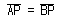
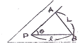
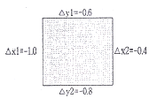
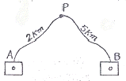
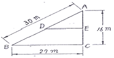

지적산업기사 (2007-05-13 기출문제)
1과목: 지적측량
1. 천저(天底)를 0° 로 하는 연직분도 반으로서 측정한 연직각이 98° 이었다면 고저각은?
- -2°
- +98°
- +8°
- +82°
(정답률: 알수없음)

2. 측선 AB 의 측선거리가 100m 이고 방위각이 120° 일 때 A 점에서 B 점가지의 종선차와 횡선차로 옳은 것은?
- △x = +86.6m , △y = +50.0m
- △x = +50.0m , △y = +86.6m
- △x = -86.6m , △y = +50.0m
- △x = -50.0m , △y = +86.6m
(정답률: 알수없음)
3. 축척이 1:600인 측량 원도에서 900m2의 토지를 분할하여 303m2와 587m2로 산출되었다. 이에 따른 가장 올바른 처리 방법은?
- 오차를 각 필지에 양분한다.
- 도면의 신축량을 보정한다.
- 공차외 이므로 재 측정한다.
- 산출면적 303m2 을 313m2으로 결정한다.
(정답률: 알수없음)
4. 지적삼각보조측량을 교회법으로 시행할 경우에 대한 설명으로 틀린 것은?
- 수평각 관측은 3대회의 방향 관측법에 의한다.
- 삼각형 내각 관측치의 합과 180° 와의 차는 ±50″이내 이어야 한다.
- 삼각형의 내각은 30° 이상 120° 이하로 한다.
- 기지각과의 차는 ±50″이내 이어야 한다.
(정답률: 알수없음)
5. 축척 1/600 지역에서 측판 측량시 도상에 영향을 주지 않는 지상거리의 허용범위는?
- 6㎝ 이내
- 10㎝ 이내
- 12㎝ 이내
- 24㎝ 이내
(정답률: 알수없음)
6. 경위의측량법으로 세부측량을 실시할 때에 직선으로 연결하는 부분에 해당하는 곡선의 중앙종거의 길이에 대한 기준으로 옳은 것은?
- 5㎝ 내지 10㎝ 로 한다.
- 10㎝ 내지 15㎝ 로 한다.
- 15㎝ 내지 20㎝ 로 한다.
- 20㎝ 내지 25㎝ 로 한다.
(정답률: 75%)
7. 경계점좌표등록부시행지역의 지적도 근점 측량성과가 그 결과로 인정될 수 있는 검사성과와의 허용범위는?
- 0.10m 이내
- 0.15m 이내
- 0.20m 이내
- 0.25m 이내
(정답률: 알수없음)
8. 다음 중 지적측량에서 주로 사용하는 방위각은?
- 진북방위각 (眞北方位角)
- 도북방위각 (圖北方位角)
- 자북방위각 (磁北方位角)
- 천북방위각 (天北方位角)
(정답률: 알수없음)
9. 측판측량방법에 의한 세부측량을 도선법에 의할 때 도선의 변수는 몇 변 이하로 하는가?
- 10변 이하
- 20변 이하
- 30변 이하
- 40변 이하
(정답률: 알수없음)
10. 그림에서 가구 정점 P의 좌표를 구하기 위한 길이 ℓ은 얼마인가?(단,

, L = 20m, 절협각 θ = 88°)
- 6.95m
- 10.01m
- 13.89m
- 14.40m
(정답률: 30%)
11. 임야대장의 면적과 등록전환될 면적의 오차 허용범위를 구하는 식은? (단, M: 임야도 축척분모, F: 등록전환될 면적)
- 0.0232M√F
- 0.232M√F
- 0.0262M√F
- 0.262M√F
(정답률: 알수없음)
12. 지적제도에 사용되는 선과 색에 대한 설명으로 적합하지 않은 것은?
- 경계는 0.1㎜ 폭으로 한다.
- 도곽선 수치는 붉은색으로 한다.
- 말소선은 검은색으로 한다.
- 리ㆍ동 행정구역선은 0.2㎜ 폭으로 한다.
(정답률: 알수없음)
13. 지적측량에서 실시하는 기초측량방법에 해당되지 않는 것은?
- 경위의측량방법
- 측판측량방법
- 위성측량방법
- 광파기측량방법
(정답률: 알수없음)
14. 진북방향각에 대한 부호를 설명한 것으로 옳은 것은?
- 원점의 좌측(동쪽)에 있을 경우에는 + 값을 갖는다.
- 원점의 좌측(동쪽)에 있을 경우에는 - 값을 갖는다.
- 원점의 좌측과 우측에 관계없이 - 값을 갖는다.
- 원점의 좌측과 우측에 관계없이 + 값을 갖는다.
(정답률: 알수없음)
15. 공업단지조성사업의 공사를 완료하고 새로이 지적공부를 조제하기 위하여 실시하는 측량은?
- 등록전환측량
- 신규등록측량
- 축척변경측량
- 지적확정측량
(정답률: 47%)
16. 세부측량을 측판측량방법으로 시행할 경우 측량 방법으로 적합하지 않은 것은?
- 교회법
- 도선법
- 방사법
- 지거법
(정답률: 알수없음)
17. 배각법에 의한 지적도근측량에서 폐색변을 포함한 변수가 12변인 1등도선의 폐색오차의 기준은?
- ± 65초 이내
- ± 67초 이내
- ± 69초 이내
- ± 73초 이내
(정답률: 알수없음)
18. 축척 1/600 지적도 지역에서 도곽신축량이 △×1 = -1.0㎜, △×2 = -0.4㎜, △y1 = -0.6㎜, △y2 = -0.8㎜ 일 경우 면적 보정 계수는?

- 0.9962
- 0.9981
- 1.0038
- 1.0083
(정답률: 알수없음)
19. 정오차에 대한 설명으로 옳지 않은 것은?
- 원인과 상태를 알면 일정한 법칙에 따라 보정할 수 있다.
- 수학적 또는 물리적인 법칙에 따라 일정하게 발생한다.
- 관측자의 미숙이나 부주의에서 비롯한다.
- 조건과 상태가 변화하면 그 변화량에 따라 오차의 양도 변화하는 계통적 오차이다.
(정답률: 알수없음)
20. 다각망도선법에서 도선이 17개이고 교점이 9개일 때 필요한 최소 조건식의 수는?
- 6개
- 7개
- 8개
- 9개
(정답률: 알수없음)
2과목: 응용측량
21. 다음 그림에서 A, B 두 개의 수준점으로부터 수준 측량을 하여 P점의 표고를 구한 값으로 옳은 것은?(단, A→P : 31.363m , B→P : 31.375m 이다.)

- 31.366m
- 32.366m
- 33.366m
- 34.366m
(정답률: 알수없음)
22. 다음 중 지형측량에 대한 설명으로 옳지 않은 것은?
- 등고선간격이 20m라 함은 수직방향 거리를 의미한다.
- 지형표시 방법에는 음영법, 영선법 등이 있다.
- 등고선은 폐합되지 않을 수도 있다.
- 동일 등고선 상의 모든 점은 높이가 같다.
(정답률: 알수없음)
23. 항공삼각측량의 3차원 항공삼각측량 방법중에서 공선 조건식을 이용하는 해석법은?
- 블럭조정법
- 에어로 폴리곤법
- 독립모델법
- 번들조정법
(정답률: 알수없음)
24. 그림과 같은 삼각형 ABC의 토지를 BC에 평행한 직선 DE로 △ADE : □BCED = 2:3 의 면적비율로 분할하려고 할때 적당한 AD의 길이는 얼마인가?

- 24.78m
- 18.97m
- 16.76m
- 13.54m
(정답률: 60%)
25. 고속도로의 평면 선형곡선의 설치에 가장 널리 사용되고 있는 완화곡선은?
- 원곡선
- 3차 포물선
- 렘니스케이트 곡선
- 클로소이드 곡선
(정답률: 알수없음)
26. 반경 150m 인 원곡선의 현 길이 20m 에 대한 편각은?
- 1° 54′41″
- 3° 49′11″
- 5° 44′02″
- 7° 38′42″
(정답률: 알수없음)
27. 항공사진 판독의 요소와 거리가 먼 것은?
- 음영 (shadow)과 색조 (tone)
- 질감 (texture)과 모양 (pattern)
- 크기 (size) 와 형상 (shape)
- 축척 (scale)과 초점거리 (focal distance)
(정답률: 알수없음)
28. 초점거리 200㎜인 촬영기로 5000m 고도에서 촬영한 사진의 축척은 얼마인가?
- 1/50000
- 1/25000
- 1/10000
- 1/2500
(정답률: 알수없음)
29. 항공사진 측량 도화기의 정밀도를 나타내는 계수는?
- C-계수
- K-상수
- 경중률 계수
- 과잉수정 계수
(정답률: 73%)
30. 장거리 고저차 측량에는 지구 곡률에 의한 오차 즉 구차가 적용되는데 이 구차에 대한 설명으로 맞는 것은?
- 구차는 거리제곱에 반비례한다.
- 구차는 곡률반경의 제곱에 비례하다.
- 구차는 곡률반경에 비례한다.
- 구차는 거리제곱에 비례한다.
(정답률: 알수없음)
31. 기포관의 감도는 무엇으로 표시하는가?
- (시준거리/반지름)으로 표시
- 기포관의 눈금 수로 표시
- 기포관 1눈금이 곡률중심에 낀 각으로 표시
- 기포관 눈금의 양 끝단이 곡률중심에 낀각으로 표시
(정답률: 알수없음)
32. GPS (Global Positioning System) 시스템의 구성요소가 아닌 것은?
- 위성에 대한 우주 부분
- 지상 관제소에서의 제어 부분
- 경영 활동을 위한 영업 부분
- 측량자가 사용하는 수신기 등에 대한 사용자 부분
(정답률: 92%)
33. 곡선설치를 할 때 교점의 추가거리가 140.21㎞이고 접선 길이가 230.5m 이면 기점으로부터 곡선 시점가지의 거리는?
- 139979.5m
- 137879.5m
- 147879.5m
- 14826.5m
(정답률: 60%)
34. 1/25000 지형도 상에서 두 점간의 거리를 측정하니 4㎝였다. 축척이 다른 지형도의 동일한 두 점간의 거리가 10㎝일 때 이 지형도의 축척은?
- 1/5000
- 1/10000
- 1/15000
- 1/30000
(정답률: 알수없음)
35. 항공사진측량에 대한 설명으로 틀린 것은?
- 측량지역에 대해 균일한 정확도의 성과를 얻을 수 있다.
- 현황에 대한 증거를 오랫동안 명확히 보존할 수 있다.
- 접근하기 어려운 대상물에 대해 측정이 가능하다.
- 넓은 지역의 지형측량에는 평판측량이 더 경제적이다.
(정답률: 알수없음)
36. GPS에서 발생하는 오차가 아닌 것은?
- 위성 시계 오차
- 위성 궤도 오차
- 대기권 굴절 오차
- 시차 (視差)
(정답률: 67%)
37. 완화곡선의 성질에 대한 설명 중 틀린 것은?
- 완화곡선의 반지름은 시점에서 무한대이다.
- 완화곡선의 접선은 시점에서는 직선에 접하고 종점에서는 원호에 접한다.
- 완화곡선에 연한 곡선 반지름의 감소율은 캔트의 증가율과 같다.
- 완화곡선 시점의 캔트는 원곡선의 캔트와 같다.
(정답률: 알수없음)
38. 1개의 수직갱에 의한 갱내외 연결측량 방법으로 가장 일반적으로 사용되는 방법은?
- 정렬식
- 삼각법
- 트래버스
- 시거법
(정답률: 알수없음)
39. 터널내 곡선설치방법으로 가장 적합한 것은?
- 현편거법
- 편각현장법
- 전방교선법
- 중앙종거법
(정답률: 알수없음)
40. 항공사진의 특수 3점 중 렌즈 중심으로부터 화면에 내린 수선의 발을 무엇이라 하는가?
- 주점
- 연직점
- 등각점
- 부점
(정답률: 80%)
3과목: 토지정보체계론
41. 다목적 지적제도의 5대 구성요소에 해당되지않는 것은?
- 측지기본망(Geodetic Reference Network)
- 기본도(Base Map)
- 지적중첩도(Cadastral Overlay Map)
- 토지정보직무(Land Information Function)
(정답률: 90%)
42. 벡터자료의 특징으로 옳은 것은?
- 정밀도는 격자간격에 의존한다.
- 공간객체의 위치는 행이나 열로서 표시한다.
- 객체의 위치를 공간상에서 방향성과 크기를 가지고 나타낸다.
- 격자상의 일정한 수치 값으로 지표면의 특성을 표현한다.
(정답률: 알수없음)
43. 점, 선, 면 등의 객체(object)들 간의 공간관계가 설정되지 못한채 일련의 좌표에 의한 그래픽 형태로 저장되는 구조로 공간분석에는 비효율적이지만 자료 구조가 매우 간단하여 수치지도를 제작하고 갱신하는 경우에는 효율적인 자료구조는?
- 래스터(raster) 구조
- 스파게티(spaghetti) 구조
- 위상(topology) 구조
- 체인코드(chain codes) 구조
(정답률: 알수없음)
44. 한국토지정보시스템의 약자로 맞는 것은?
- LMIS
- KMIS
- PBLIS
- KLIS
(정답률: 알수없음)
45. 지적전산의 사용자권한등록파일에 등록하는 사용자의 비밀번호에 대한 기준으로 옳은 것은?
- 사용자가 3내지 6자리로 정하여 사용한다.
- 사용자가 영문을 포함하여 3내지 6자리로 정하여 사용한다.
- 사용자가 6내지 16자리로 정하여 사용한다.
- 사용자가 영문을 포함하여 5내지 10자리로 정하여 사용한다.
(정답률: 알수없음)
46. 지적도면을 수치화 한 최종 결과파일로서 자료교환에 가장 유리한 형식은?
- dbf
- dgn
- dwg
- dxf
(정답률: 91%)
47. 토지대장상 고유번호는 19자리로 구성되어 있다. 이중 지번은 몇 자리수로 구성되는가?
- 10자리
- 8자리
- 6자리
- 12자리
(정답률: 70%)
48. 자료를 효율적으로 공유하고 관리하기 위해 자료의 소개, 품질, 구성, 형상 및 속성정보, 공간참조 등과 같은 정보를 제공해주는 데이터를 무엇이라 하는가?
- 위치데이터
- 표본데이터
- 관계데이터
- 메타데이터
(정답률: 알수없음)
49. 현행 토지정보시스템의 속성자료의 내용과 가장 거리가 먼 것은?
- 토지대장
- 임야대장
- 국세과세대장
- 공유지연명부
(정답률: 알수없음)
50. PBLIS의 개발 내용 중 맞지 않는 것은?
- 지적공부관리시스템
- 지적측량성과 작성 시스템
- 건축물관리시스템
- 지적측량시스템
(정답률: 82%)
51. 자료의 취득방법 중 디지타이징에 대한 설명으로 틀린 것은?
- 내용이 다소 불분명한 도면이라도 입력이 가능하다.
- 자료를 벡터라이징을 한 후 편집용 소프트웨어를 통해 래스터 자료로 변환하여 입력하는 방법이다.
- 효율성은 작업자의 숙련도에 따라 크게 좌우된다.
- 디지타이저를 이용하여 필요한 자료의 좌표를 독취하는 방법이다.
(정답률: 알수없음)
52. 한국토지정보체계 구축에 따른 기대효과로 가장 거리가 먼 것은?
- 다양하고 입체적인 토지정보를 제공
- 민원처리 기간의 단축 및 전국 온라인 서비스 제공
- 각 부서간의 공동 활용으로 업무 효율을 극대화
- 건축물의 유지 및 보수 현황 관리
(정답률: 알수없음)
53. 토지정보시스템의 지적정보가 시설물관리 분야에서 활용되는 사항과 가장 거리가 먼 것은?
- 도로시설물관리 분야
- 국공유재산 관리 분야
- 방재취약시설물관리 분야
- 지하시설물관리 분야
(정답률: 알수없음)
54. 토지정보시스템의 정보획득 과정 중에서 복잡한 현실세계를 이해 할 수 있도록 해주는 작업으로 기하학적 객체를 생생하게 묘사하는 과정은?
- 자료의 입력
- 자료의 출력
- 자료의 모델링
- 자료의 변환
(정답률: 50%)
55. 지적재조사의 필요성으로 가장 거리가 먼 것은?
- 국민의 재산권 보호
- 부동산중개업무의 원활
- 지적불부합지 해소
- 토지경게복원능력 향상
(정답률: 알수없음)
56. 다음 중 점 사이의 물리적 거리를 관측하는 방법으로 최단경로 검색에 사용되는 것은?
- 퀘드랫방법
- 형상관측방법
- 최근린방법
- 도표이론방법
(정답률: 알수없음)
57. 공시지가에 따라 필지의 색상을 등급별로 자동으로 표시하려고 할 때 필요한 작업은?
- 공간자료와 속성자료의 링크
- 공간정보의 구조화편집
- 공간정보의 정위치편집
- 토지정보시스템의 통신망 연결
(정답률: 알수없음)
58. 해상도에 대한 설명으로 옳은 것은?
- 일반적으로 해상도가 높을수록 데이터량이 증가한다.
- 보통 해상도가 높을수록 화상이 흐릿하다.
- 해상도가 높을수록 자료검색 속도가 빨라진다.
- 래스터데이터는 해상도와 무관한 구조이다.
(정답률: 알수없음)
59. 다음 중 관계형데이터베이스에 대한 설명으로 옳은 것은?
- 트리 구조와 같은 계층형 구조를 가지고 있다.
- 두 개 이상의 부모 레코드를 가진 데이터 모델이다.
- 데이터를 2차원의 테이블형태로 저장한다.
- 필요한 정보를 추출하기 위한 질의의 형태에 많은 제한을 받는 것이 단점이다.
(정답률: 알수없음)
60. 격자를 벡터구조로 변환시 격자영상에 생긴 잡음(noise)을 제거하고 외각선을 연속적으로 이어주는 영상처리 과정은?
- Filtering
- Noising
- Conversion
- Thinning
(정답률: 60%)
4과목: 지적학
61. 적극적 지적에 대한 설명으로 옳지 않은 것은?
- 토지 등록을 의무로 하지 않는다.
- 지적공부에 등록되지 않는 토지에는 어떠한 권리도 인정되지 않는다.
- 적극적 등록제도의 발달된 형태로 토렌즈 시스템이 있다.
- 선의의 제3자에 대한 등록상의 피해는 법적으로 보장된다.
(정답률: 알수없음)
62. 현행 토지대장과 같은 조선시대 양안(量案)의 역할이 아닌 것은?
- 토지의 실태 파악
- 세금 징수대장
- 소유권 입증(立證)
- 가옥 유무 확인
(정답률: 알수없음)
63. 면적을 새로이 측정할 경우가 아닌 것은?
- 토지를 신규로 등록할 때
- 토지를 분할 할 때
- 등록 전환을 할 때
- 토지를 합병 할 때
(정답률: 84%)
64. 경계의 특성을 기술한 것으로 옳지 않은 것은?
- 필지 사이의 경계는 1개가 존재한다.
- 경계는 크기가 없는 기하학적인 의미이다.
- 경계는 면적을 갖고 있으므로 분할이 가능하다.
- 경계는 경계점 사이의 최단거리 연결이다.
(정답률: 알수없음)
65. 지적측량의 특징으로서 맞지 않는 것은?
- 필지의 확정
- 기속적 측량
- 공사 시공 측량
- 사법적 측량
(정답률: 알수없음)
66. 우리나라의 지번설정방식으로서 옳지 않은 것은?
- 도엽 단위법
- 남동 단위법
- 사행식
- 북서 기번법
(정답률: 알수없음)
67. 다음 중 일필지에 대한 설명으로 옳지 않은 것은?
- 지형ㆍ지물에 의한 지리학적 등록 단위이다.
- 하나의 지번을 붙이는 토지등록 단위이다.
- 물권이 미치는 법적인 토지등록 단위이다.
- 굴곡점을 직선으로 연결한 폐합다각형이다.
(정답률: 알수없음)
68. 지적제도는 토지의 지번, 지목, 면적 및 경계를 지적공부에 등록 관리함에 있어서 법률적으로 이념을 지니고 있다. 다음 중 지적법의 이념으로 옳지 않은 것은?
- 지적 국정주의
- 지적 형식주의
- 지적 무한주의
- 지적 공개주의
(정답률: 59%)
69. 토지의 물권 공시제도로서의 지적과 등기가 각각 분담하는 관계로 옳지 않은 것은?
- 토지 등록단위 결정 - 지적
- 토지 위치결정 - 지적
- 제한 물권 설정 - 등기
- 신규등록지의 소유자 조사 - 등기
(정답률: 40%)
70. 토지조사사업 당시 지목에서 비과세 지목이 아닌 것은?
- 성첩
- 하천
- 잡종지
- 제방
(정답률: 알수없음)
71. 대한제국 때에 부동산 거래질서가 문란하여 토지소유권 이전을 국가가 통제할 수 있도록하는 제도로 입안 대신 채택한 것은?
- 양안제도
- 문기제도
- 지계제도
- 가계제도
(정답률: 알수없음)
72. 토지등록부의 편성에 있어서 미국의 리코딩시스템(Recording System)은 다음 어디에 속하는가?
- 물적편성주의
- 인적편성주의
- 연대적편성주의
- 인적ㆍ물적편성주의
(정답률: 알수없음)
73. 다음 중 지번설정의 진행방향에 따른 분류가 아닌 것은?
- 절충식
- 오결식
- 사행식
- 기우식
(정답률: 알수없음)
74. 다음 중 지적법령의 변천 연혁을 순서대로 바르게 나열한 것은?
- 토지조사법 → 토지조사령 → 지세령 → 조선임야조사령 → 조선지세령 → 지적법
- 토지조사법 → 토지조사령 → 지세령 → 조선지세령 → 조선임야조사령 → 지적법
- 토지조사법 → 지세령 → 토지조사령 → 조선지세령 → 조선임야조사령 → 지적법
- 토지조사법 → 지세령 → 조선임야조사령→ 토지조사령 → 조선지세령 → 지적법
(정답률: 알수없음)
75. 다음 지목의 설정원칙 중에서 다양한 용도 가운데 내용적으로 가장 주된 용도를 찾아 설정한다는 내용의 원칙은?
- 1필1목의 원칙
- 주지목추종의 원칙
- 등록선후의 원칙
- 일시불변경의 원칙
(정답률: 84%)
76. 토지조사사업추진 당시의 일필지조사 업무가 아닌 것은?
- 지주조사
- 강계조사
- 지목조사
- 관습조사
(정답률: 알수없음)
77. 토지의 경계가 도로, 벽, 담장, 울타리, 도랑, 개천, 해안선 등으로 이루어진 경우를 의미하며 영국 토지거래법 등에서 사례를 찾아 볼수 있는 경계의 유형은?
- 고정경계
- 일반경계
- 보증경계
- 인정경계
(정답률: 알수없음)
78. 토지조사사업의 토지 사정 당시 일필지의 강계 (疆界)를 별필(別筆)로 하는 사유에 해당하지않는 것은?
- 도로, 하천 등에 의하여 자연구획을 이룬 것
- 토지의 소유자와 지목이 동일하고 연속된 것
- 지반의 고저차가 심한 것
- 특히 면적이 광대한 것
(정답률: 30%)
79. 양전의 순서에 따라 천자문의 자번호를 부여 하였던 제도는?
- 수등이척제
- 일자오결제
- 지번지역제
- 동적이척제
(정답률: 70%)
80. 다음 중 토지의 경계를 도면에 표시하는 지적 제도는?
- 수치지적
- 세지적
- 도해지적
- 법지적
(정답률: 알수없음)
5과목: 지적관계
81. 지적도나 임야도에 지목 표기방법이 잘못된것은?
- 과수원 → 과
- 학교용지 → 교
- 공장용지 → 장
- 종교용지 → 종
(정답률: 알수없음)
82. 소관청이 지적 공부에 등록된 토지의 지번을 변경할 필요가 있을 때 다음 중 누구의 승인을 얻어야 하는가?
- 건설교통부 장관
- 대행법인의 장
- 시장 또는 군수
- 도지사
(정답률: 70%)
83. 다음 중 지적공부에 등록한 토지를 말소시키는 경우는?
- 토지가 바다로 된 경우로서 원상으로 회복할 수 없을 때
- 수해로 인하여 토지가 유실되었을 때
- 토지형질 변경을 하였을 때
- 화재로 인하여 건물이 소실된 때
(정답률: 73%)
84. 전산정보처리조직에 의한 사용자 권한 등록 화일에 등록할 사항이 아닌 것은?
- 사용자의 이름
- 사용자 번호
- 사용자 비밀번호
- 사용자 직책
(정답률: 알수없음)
85. 다음은 소관청이 관할 등기소에 등기를 촉탁 할 수 있는 경우이다. 틀린 것은?
- 축척변경을 시행한 때
- 소관청이 직권으로 지목을 변경한 때
- 토지 소유자의 신청에 따라 토지를 지적 공부에 신규 등록한 때
- 행정구역의 개편으로 새로이 지번을 설정한 때
(정답률: 알수없음)
86. 중앙 지적위원회의 심의ㆍ의결 사항이 아닌 것은?
- 축척변경 시행계획안에 관한 사항
- 지적 기술자의 징계에 관한 사항
- 토지등록업무의 개선에 관한 사항
- 지적측량적부심사 재심사에 관한 사항
(정답률: 알수없음)
87. 동일한 지번설정지역내 지번이 100, 100-1, 100-2, 100-3 으로 되어 있고 100번지의 토지를 2필지로 분할하고자 할 경우 지번 결정은?
- 100-4 및 100-5로 설정한다.
- 100 및 100-4로 설정한다.
- 100-1 및 100-4로 설정한다.
- 100 및 101로 설정한다.
(정답률: 82%)
88. 축척변경시행지역 내의 토지소유자 또는 점유자는 시행공고가 있는 날로부터 최대 몇 일 이내에 경계점표시를 설치해야 하는가?
- 60일
- 30일
- 15일
- 시행공고 즉시
(정답률: 알수없음)
89. 다음 중 지적법에서 규정한 내용이 아닌 것은?
- 토지등록절차
- 지적측량방법
- 효율적인 토지개발 방법
- 토지의 등록사항
(정답률: 60%)
90. 신규등록 할 토지가 발생한 경우 최대 몇 일 이내에 신청하여야 하는가?
- 15일
- 30일
- 60일
- 90일
(정답률: 알수없음)
91. 지번부여지역에 대한 설명으로 가장 타당한 것은?
- 지번을 부여하는 단위지역으로서 동ㆍ리 또는 이에 준하는 지역
- 지번을 부여하는 단위지역으로서 읍ㆍ면 또는 이에 준하는 지역
- 지번을 부여하는 단위지역으로서 시ㆍ군 또는 이에 준하는 지역
- 지번을 부여하는 단위지역으로서 시ㆍ도 또는 이에 준하는 지역
(정답률: 알수없음)
92. 다음 중에서 지적측량업의 등록을 취소해야 하는 경우에 해당되지 않는 것은?
- 거짓, 그밖에 부정한 방법으로 지적측량업의 등록을 한 자
- 법인의 임원 중형의 집행유예선고를 받고 그 유예기간이 경과된 자가 있는 때
- 다른 사람에게 자기의 등록증을 빌려준 때
- 영업정지기간 중에 지적측량업을 영위한 때
(정답률: 알수없음)
93. 다음 중'체육용지'로 지목 설정을 할 수 있는 것은?
- 공원
- 골프장
- 경마장
- 유선장
(정답률: 60%)
94. 지적법에 의한 과태료 부과 중 50만원 이하의 과태료 부과 대상이 아닌 것은?
- 등록사항변경신고를 하지 아니한 자
- 휴ㆍ폐업 등의 신고를 하지 아니한 자
- 자기ㆍ배우자 또는 직계 존ㆍ비속의 소유토지에 대하여 지적측량을 한 자
- 대한지적공사가 아니면서 이와 유사한 명칭을 사용한 자
(정답률: 알수없음)
95. 지적도의 축척이 1200분의 1 이고 토지의 면적이 제곱미터 미만의 끝수가 있는 경우 면적결정 방법이 잘못된 것은?
- 0.5 제곱미터 미만은 버린다.
- 0.5 제곱미터를 초과하는 때에는 올린다.
- 0.5제곱미터인 때에는 구하고자 하는 끝자리의 숫자가 0 또는 홀수이면 버리고 짝수이면 올린다.
- 1필지의 면적이 1제곱미터 미만인 때에는 1제곱미터로 한다.
(정답률: 알수없음)
96. 지적법상 도면에 등록할 사항이 아닌 것은?
- 지번 및 지목
- 토지의 소재
- 경계와 면적
- 건축물 및 구조물 등의 위치
(정답률: 28%)
97. 소관청은 지적공부의 등록사항이 잘못이 있음을 발견한 때에는 직권으로 조사ㆍ측량하여 정정 할수 있는데 이에 해당되지 않는 것은?
- 지적공부의 등록사항이 잘못 입력된 경우
- 지적공부의 작성 또는 재 작성 당시 잘못 정리된 경우
- 지적도 및 임야도에 등록된 필지가 면적의 증감이 있고 경계의 위치가 잘못된 경우
- 토지이동정리결의서의 내용과 다르게 정리된 경우
(정답률: 알수없음)
98. 축척변경에 따른 청산금 산출시 소관청은 그 축척 변경시행 지역안의 토지에 대하여 지번별 제곱미터당 금액을 미리 조사하여야 하는데 이러한 금액 조사의 기준일은?
- 형질변경 조서작성 완료일 현재
- 축척변경 시행공고일 현재
- 축척변경 측량완료일 현재
- 경계점표지 설치일 현재
(정답률: 알수없음)
99. 지적공부를 복구하는 경우 참고자료에 해당되지 않는 것은?
- 법원의 확정판결서 정본 또는 사본
- 측량결과도
- 토지이동정리결의서
- 지적공부등록현황 집계표
(정답률: 알수없음)
100. 지적측량수행자가 손해배상책임을 보장하기 위한 보증보험에 가입해야 할 금액의 기준으로 바르게 연결된 것은?
- 지적측량업자 : 3천만원 이상
- 지적측량업자 : 5천만원 이상
- 대한지적공사 : 10억원 이상
- 대한지적공사 : 5억원 이상
(정답률: 알수없음)
하지만, 문제에서 "천저를 0° 로 하는 연직분도 반으로서 측정한 연직각" 이라는 조건이 있기 때문에, 연직각이 0° ~ 90° 범위에 있을 때는 고저각이 180°보다 작은 값을 가지게 된다. 따라서 연직각이 98° 일 때 고저각은 "+8°" 이다.
즉, 이 문제에서는 조건이 주어져 있기 때문에 일반적인 경우와 다르게 계산해야 한다는 것이다.